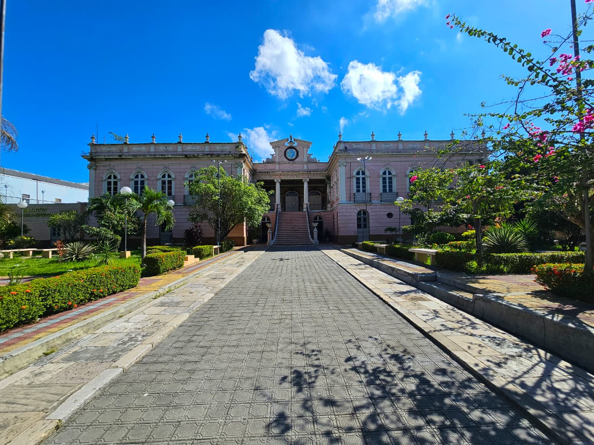

Rua Ramos Ferreira, 991 - Centro, Manaus - AM

Referência visual da unidade para ajudar na identificação do local de atendimento.
Onde fica
Endereço
Horário de funcionamento
Telefones
E-mail
Informações para chegar ao IBC.
Consulte endereço, horário e contatos antes de se deslocar para matrícula, atendimento ou início das aulas.
7h45 às 21h30
(92) 99459-3141
Antes de ir à unidade
Organize sua chegada.
A sala ou laboratório previsto para cada turma aparece na ficha do curso. A organização dos ambientes pode ser ajustada pela unidade quando necessário.
Inscrição
A consulta no IBC 360 não substitui o processo oficial.
As regras, requisitos e prazos válidos são os constantes no edital. A inscrição é realizada exclusivamente pelo Portal do Candidato do CETAM.